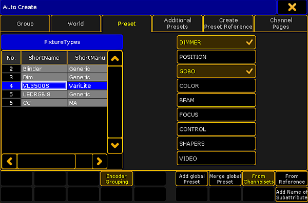

It is possible to auto create a complete set of presets at once.
Important:
If a fixture type does not contain channel sets or a preset reference, it is not possible to auto create presets.
To auto create presets:
Press Setup.
Tap Auto Create.
The dialog Auto Create opens.
Tap Preset.

Menu auto create preset
Choose a fixture type in the table FixtureTypes.
Then, tap the preset type you would like to auto create a preset for.
Important:
Auto-created presets are always global since they are generated in fixture types.
To link attributes with the same term and of the same preset type, tap Encoder Grouping.
Thereby, only one attribute is really physically visible on the stage.
To create presets for single fixture types, tap Add global Preset.
To merge presets for several fixture types, tap Merge global Preset.
To determine that presets come from channel sets of a fixture type, tap From Channelsets.
To determine that presets refer to fixture types that were previously stored, tap From Reference. For more information see Create preset reference.
To add the name of a subattribute to the name of a channel set, tap Add Name of Subattribute.
To close the menu, tap in the upper right corner of the window.